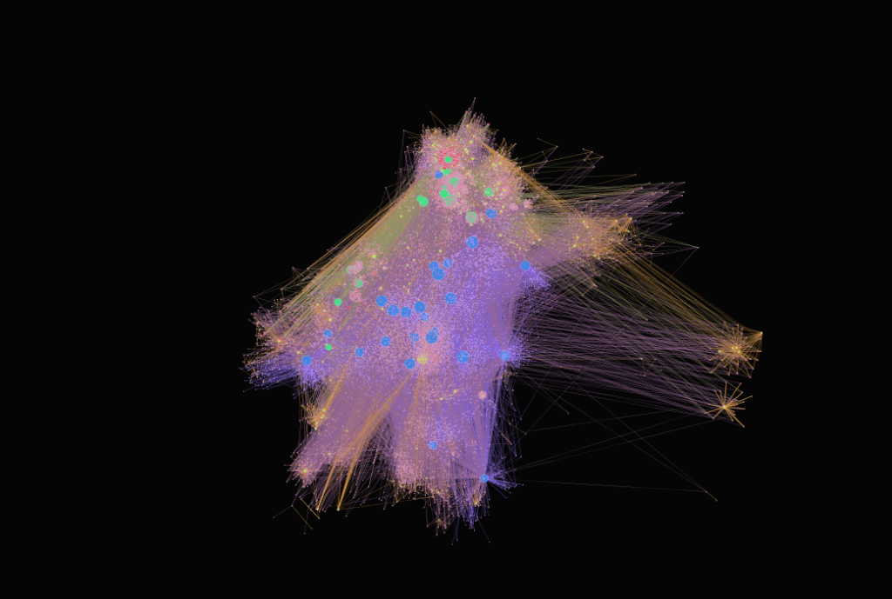
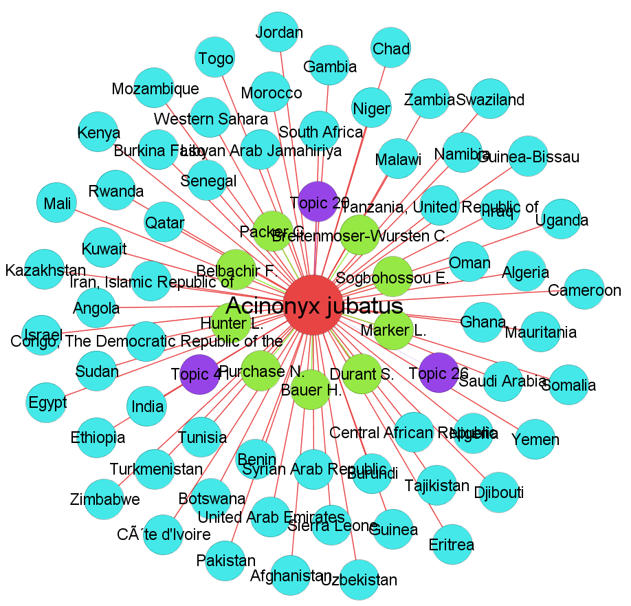
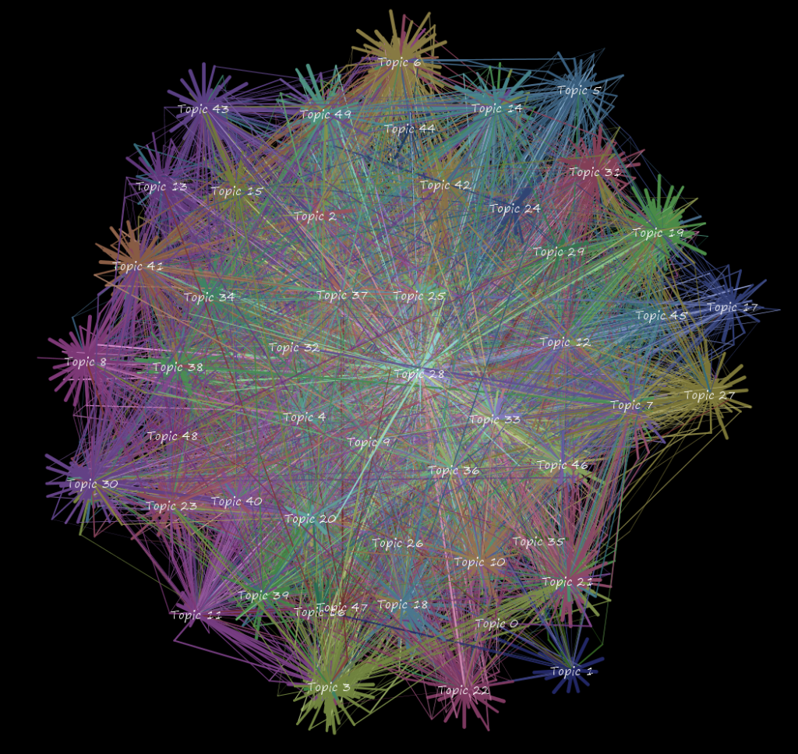
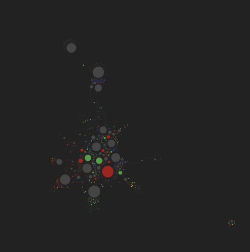
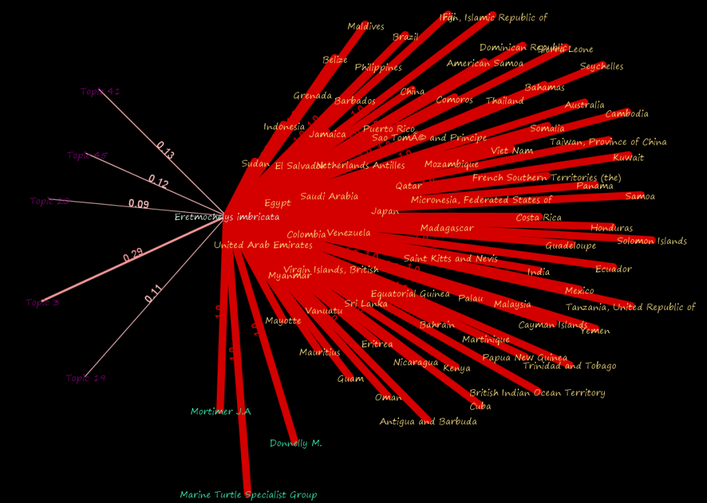
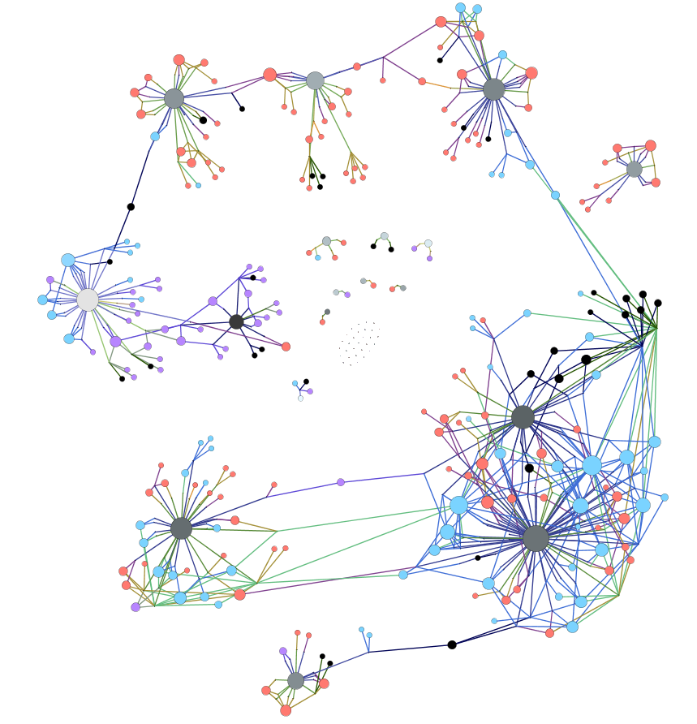
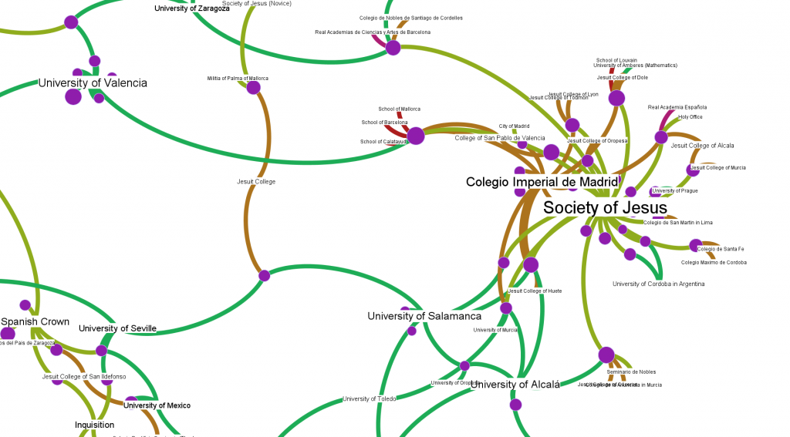
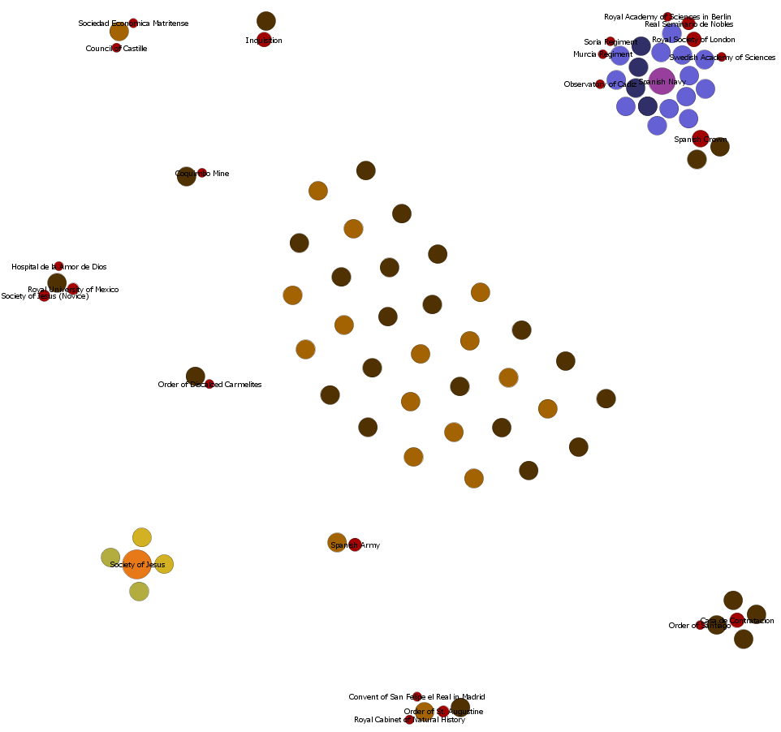

Below are a few images I created in Gephi that I’m posting here so as to give me an opportunity to conveniently show them off today. Much of this has to do with a current project with Dr. Ursula Heise focused on database aesthetics, especially in regard to large biodiversity databases.        

Visualization
Originally published at Digital Humanities Specialist. This edition preserves the original text and historical context.